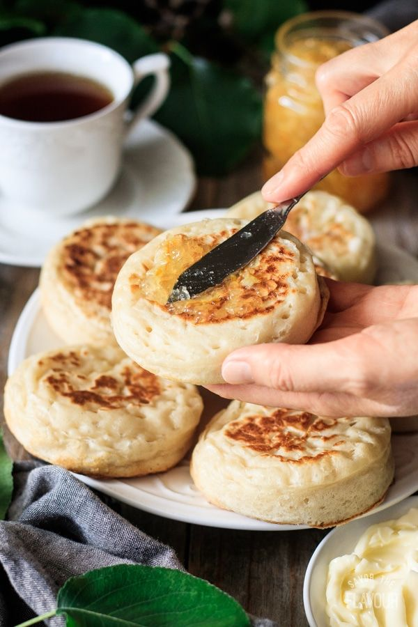

A quintessential British teatime treat, crumpet is a small round bread or cake that is traditionally cooked in a special crumpet ring on a griddle. Initially, the cakes resembled pancakes due to their thin and flat shape. Today’s crumpets have a soft, spongy, and slightly chewy texture that comes from the addition of yeast and baking powder to the cake’s batter.
Meal prep time : 50 minutes
Servings : 12